A small apartment living room has to do a lot of jobs in not much space: it is where you sit, watch, read, work and welcome friends, all inside the same few square metres. The good news is that small rooms respond well to small changes. The right sofa shape, a table you can see through, shelves that climb the wall instead of spreading across the floor — each one gives you back space, or makes the space you have feel calmer.
Below are 35 ideas, and every one comes with a photo and a short explanation written for a small apartment living room on a budget. You do not need to use all of them. Pick the two or three that solve your biggest problem first — too little seating, nowhere to put anything, or a room that feels dark and plain — and add more only if you still need them.
1. Tuck an L-Shaped Sofa into the Corner
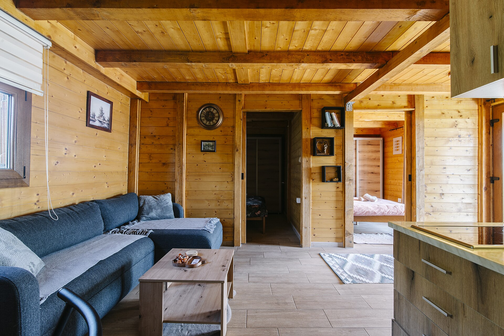
An L-shaped sofa is made for corners: the long side sits against one wall and the short return tucks along the other, so no floor space is wasted in between. In a small apartment it also gives you more seats than a straight sofa of the same width, plus a built-in spot to stretch your legs. Push it right into the corner and keep the middle of the room clear for walking.
2. Choose a Two-Seater Instead of a Full Sofa
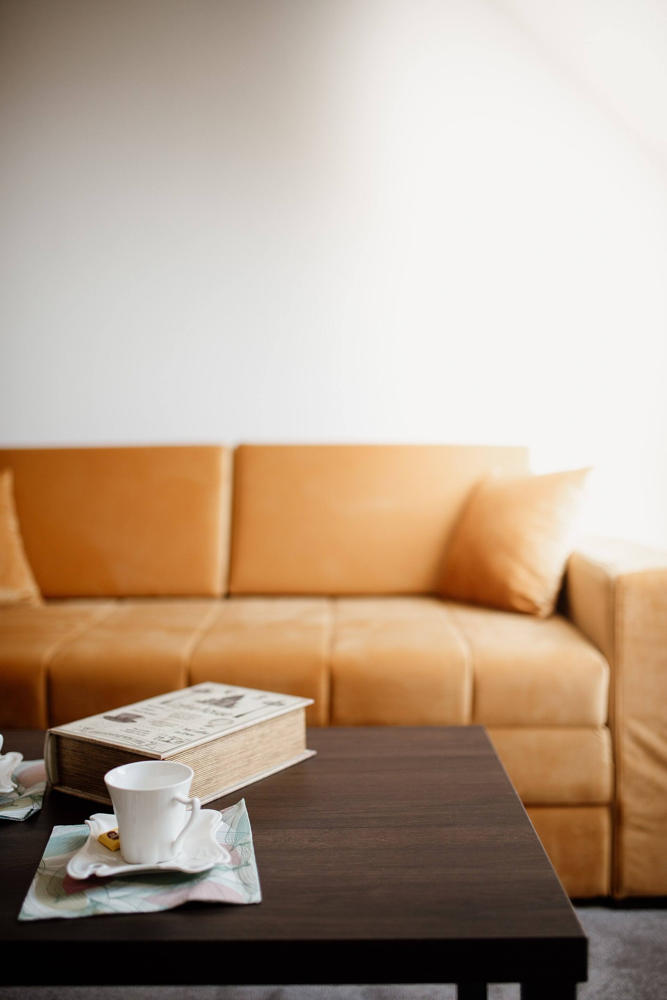
A two-seater is the safest main sofa for a small living room: it seats two people properly without swallowing the whole wall. Look for slim arms and legs that lift the base off the floor, because seeing the floor underneath makes the room feel lighter. One two-seater plus a single chair is usually a better fit than a three-seater you have to squeeze past.
3. Let a Futon Be Your Sofa and Your Guest Bed
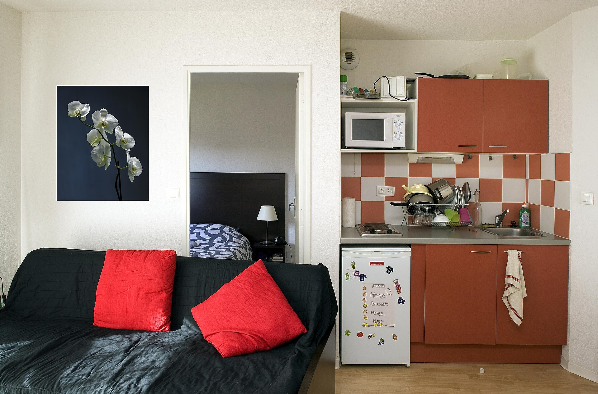
In a studio or a one-room apartment, a futon or sofa bed is the hardest-working seat you can own: a sofa all day, and a bed for you or a guest at night. Choose one that folds flat in a single movement, and keep the bedding it needs in a basket nearby so the changeover takes minutes. By day, cushions along the back make it read as a sofa, not a spare bed.
4. Pair a Loveseat with a Single Armchair
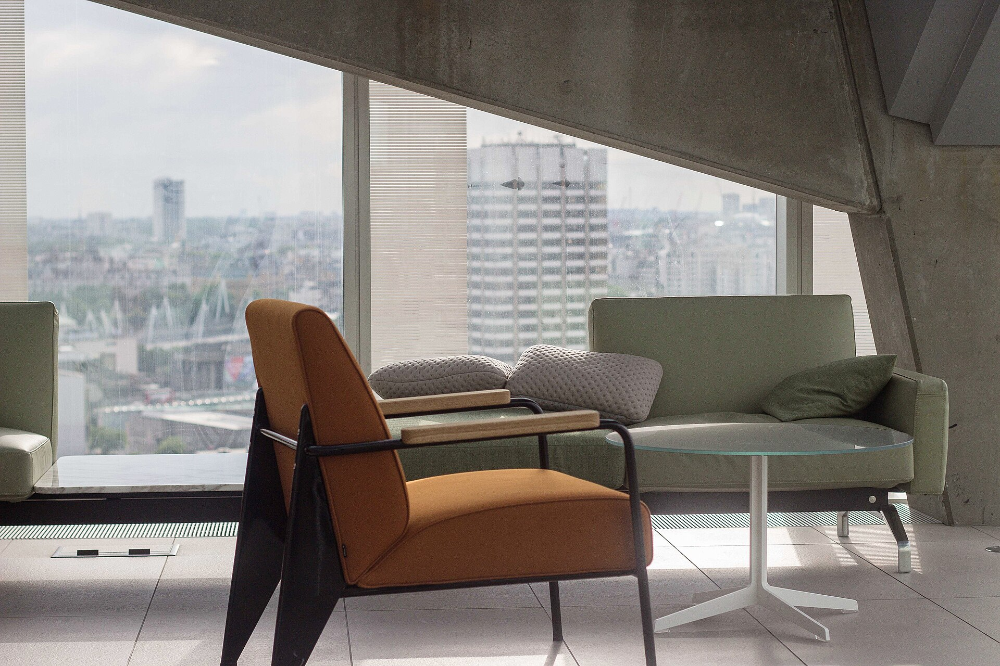
Instead of one long sofa, pair a compact loveseat with a single armchair set at an angle. The gap between the two pieces keeps the room feeling open, and the chair can be moved when you need floor space for exercise, a play mat or extra guests. A small round table between them is enough for drinks and a book.
5. Stretch Out on a Slim Chaise Longue
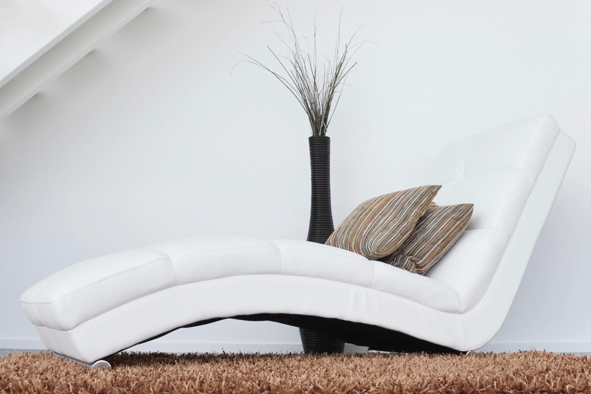
A chaise longue gives you the stretch-out comfort of a sofa in about half the width, which makes it a smart only seat for a very small living room, or a reading spot in a bigger one. The open, armless shape keeps sight lines clear, so the room feels less full. Add two cushions and a folded throw and it works for sitting, reading and napping.
6. Add a Bean Bag for Seating That Moves
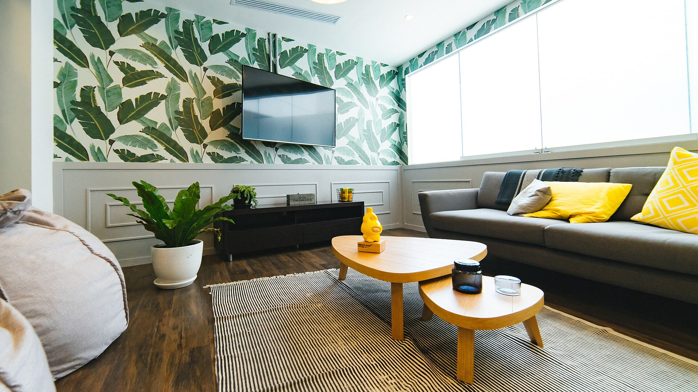
A bean bag is the extra seat that never blocks the room: light enough to drag wherever it is needed, and easy to tuck into a corner or beside the sofa afterwards. It suits film nights, gaming and guests who prefer the floor, and it adds a soft shape among all the straight lines of small furniture. Choose a cover you can remove and wash.
7. Try Two Accent Chairs Instead of a Second Sofa
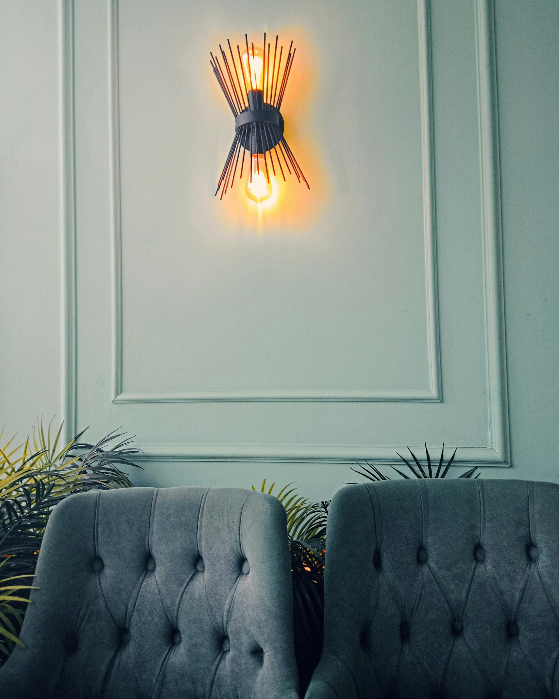
Two matching accent chairs can replace a second sofa and still seat guests in style. Chairs take up less visual space than a sofa because you can see the wall and floor around them, and they are easy to angle toward each other for conversation. A small table or a lamp between the pair makes the arrangement feel planned rather than parked.
8. Build a Reading Corner Around One Good Chair
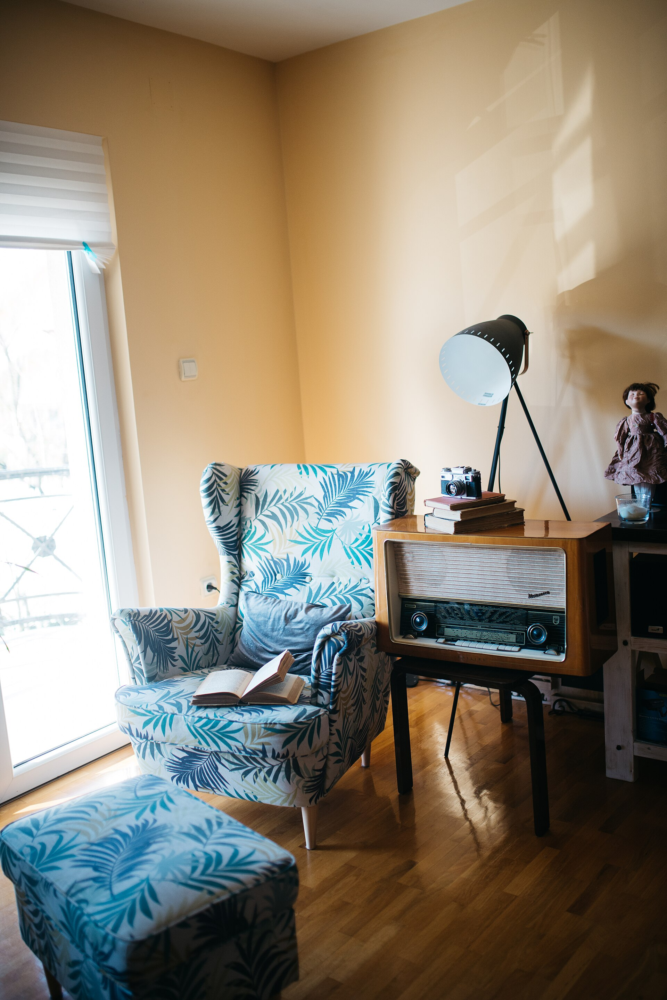
Every small living room deserves one corner that is purely for sitting: one comfortable chair, a small ottoman or footstool, and the best light you can give it. Place the chair by a window if you can, so it becomes the natural spot for morning coffee and evening reading. Keep this corner free of chargers and clutter and it stays the calmest seat in the home.
9. Pick a Glass Coffee Table You Can See Through
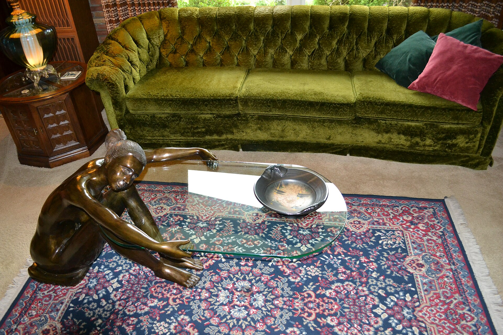
A glass coffee table does the same job as a wooden one but lets you see the rug and the floor through it, so the centre of the room stays visually open. That see-through effect is worth a lot in a small apartment, where a heavy dark table can shrink the whole seating area. Keep the top nearly empty — a book and a small bowl are plenty — so the lightness is not wasted.
10. Use a Big Ottoman as Your Coffee Table
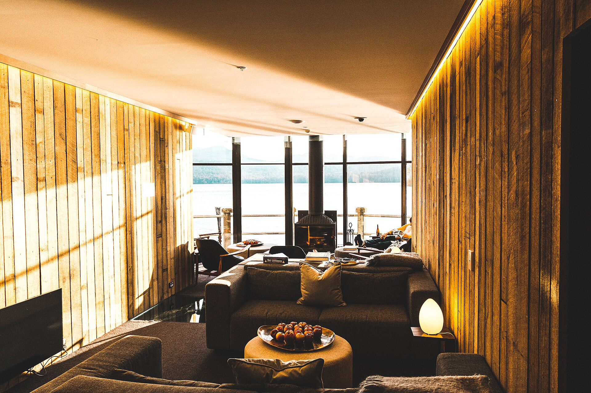
A large, firm ottoman can stand in for a coffee table and do two extra jobs: extra seating when friends visit, and a footrest every evening. Use a tray on top when you need a steady surface for cups, and take it away when you want the soft top back. Round ottomans are especially kind to small rooms, because there are no sharp corners to bump into in a tight walkway.
11. Keep the TV Bench Low and Light
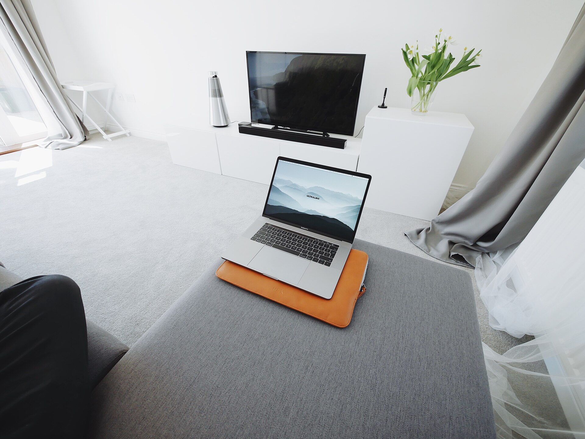
A long, low bench under the TV stops the biggest screen in the room from dominating the wall. Low furniture leaves more empty wall above it, which makes the ceiling feel higher and the room calmer. Closed sections hide cables, remotes and game boxes, while the top still has room for a plant or a soundbar. In pale wood or white it almost disappears — a real bonus in a small space.
12. Nesting Tables: Out for Guests, Away Afterwards
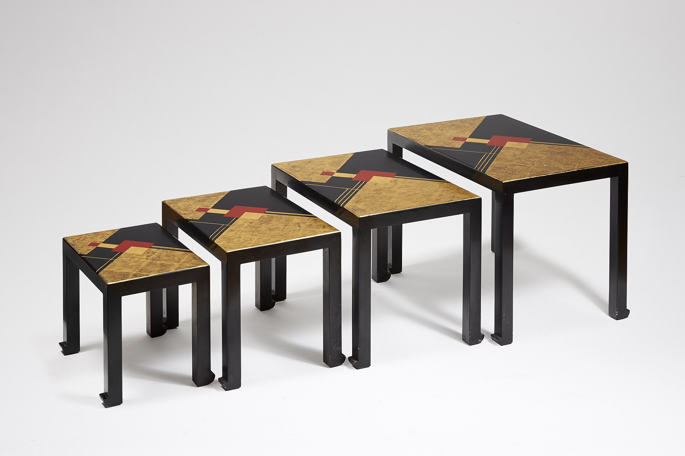
Nesting tables are the small room’s answer to the side-table problem: pull the set apart when each guest needs a surface, then slide them back together into one small footprint afterwards. They also work split up — one beside the sofa, one beside an armchair — and reunite when you need the floor back. Choose a set where even the smallest table is big enough for a mug and a phone.
13. Mount the TV Flat on the Wall
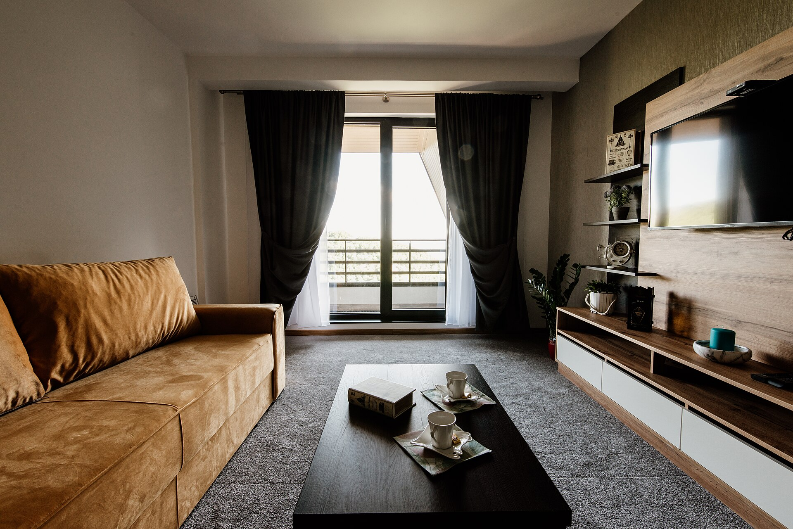
Mounting the TV flat on the wall gives you back the whole top of the furniture below it, and removes the wobble risk of a stand in a tight room. Fix it at seated eye level rather than high up, and run the cables in a simple trunking strip or behind the unit so the wall stays clean. If you rent, check the rules first, or use a stand that lifts the screen just as neatly without fixings.
14. Flank the TV with Two Matching Floor Lamps
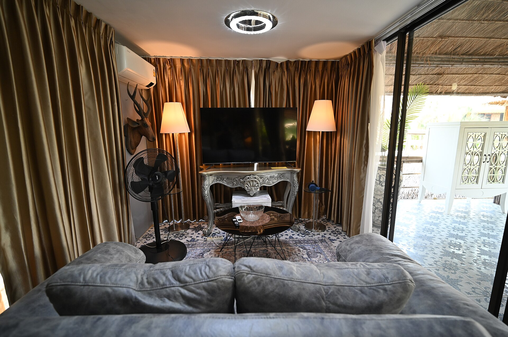
Two identical floor lamps, one on each side of the TV, give a small living room something it often lacks: balance. The matched pair frames the screen so it looks like part of the room rather than a black box on a stand, and the lamps spread warm light into both corners at once. Slim lamp bases also tuck into gaps that are too narrow for side tables.
15. Go Tall with a Bookcase
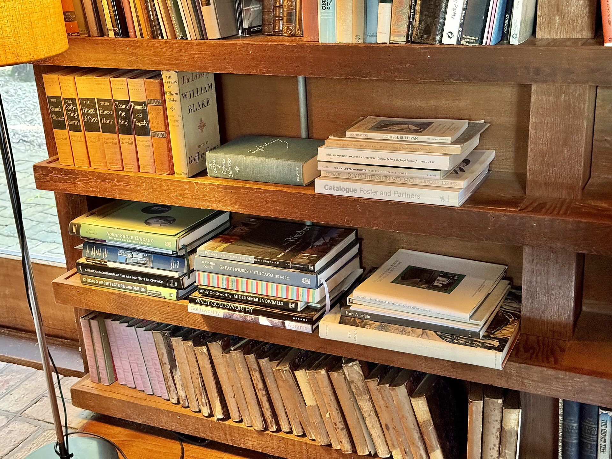
When floor space runs out, storage has to go up. A tall, narrow bookcase uses the wall height that most small rooms waste, and holds far more than a wide, low unit standing in the same footprint. Keep the heaviest books on the lower shelves, leave a little breathing room on each shelf, and fix the case to the wall so it cannot tip.
16. Turn One Wall into a Bookshelf Wall
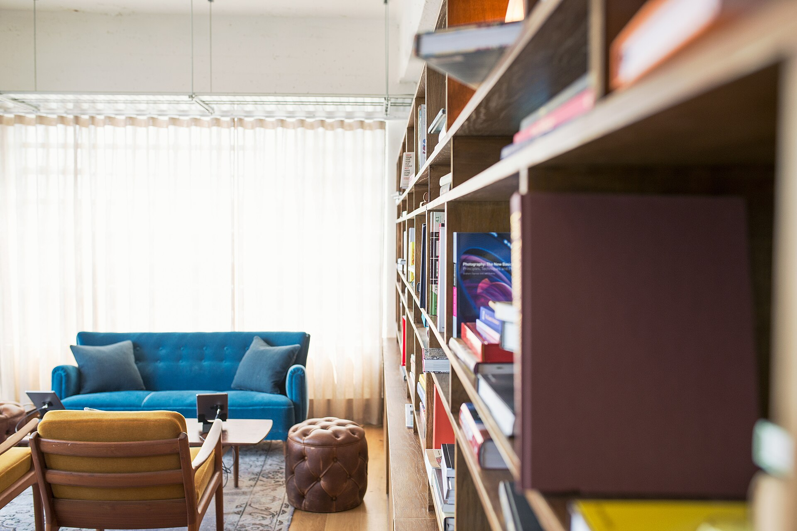
Lining one full wall with shelves turns storage into the room’s main feature: books, boxes, plants and framed photos all live in one organised place, and every other wall can stay calm. A mix of open shelves and closed cupboards keeps it from feeling heavy, and a sofa placed in front still leaves the top shelves easy to reach. This works especially well on the wall behind the sofa.
17. Warm Things Up with Wood Tones
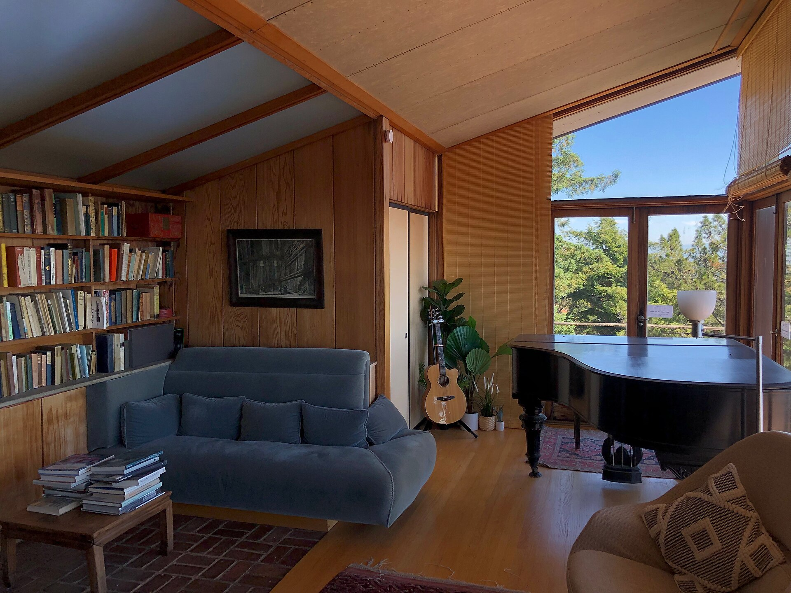
Warm wood — on shelves, a side table, picture frames or even one panelled wall — stops a small, pale room from feeling cold or plain. Wood tones pair with almost every colour, shrug off everyday scuffs, and make simple furniture look richer than it is. If a whole wood wall is too much, repeat smaller wood pieces in two or three places so the warmth feels deliberate.
18. Lean a Ladder Shelf Against the Wall
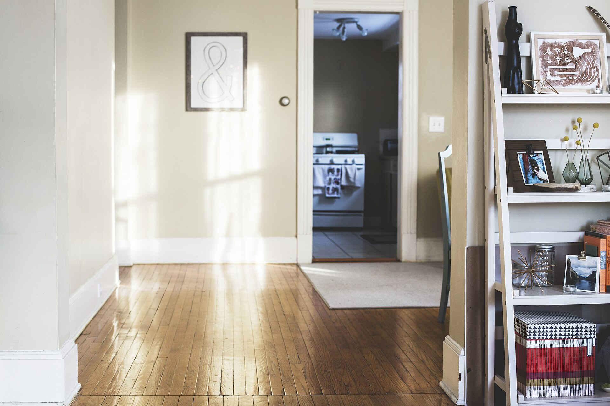
A ladder shelf leans against the wall and usually needs no fixing at all, which makes it a favourite for renters. Its shelves are deep at the bottom for books and baskets and shallow at the top for plants and frames, so it holds a lot without pushing into the room. Style it with gaps: a shelf that is half empty looks styled, while a stuffed one looks like storage overflow.
19. Hide Clutter in Lidded Baskets
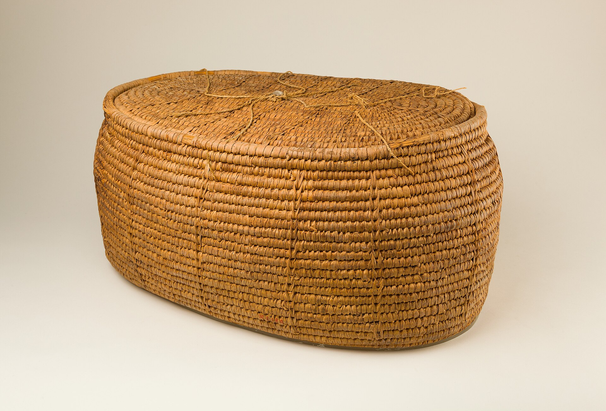
A lidded basket is the fastest tidy-up in a small living room: remotes, chargers, craft supplies, toys and spare blankets disappear in seconds, and the lid keeps the calm look. Natural woven textures also soften a room full of flat-pack furniture. Keep one basket beside the sofa for everyday clutter and one for blankets, and empty them properly once a week so they do not become hiding places.
20. Give One Wall a Brick Finish
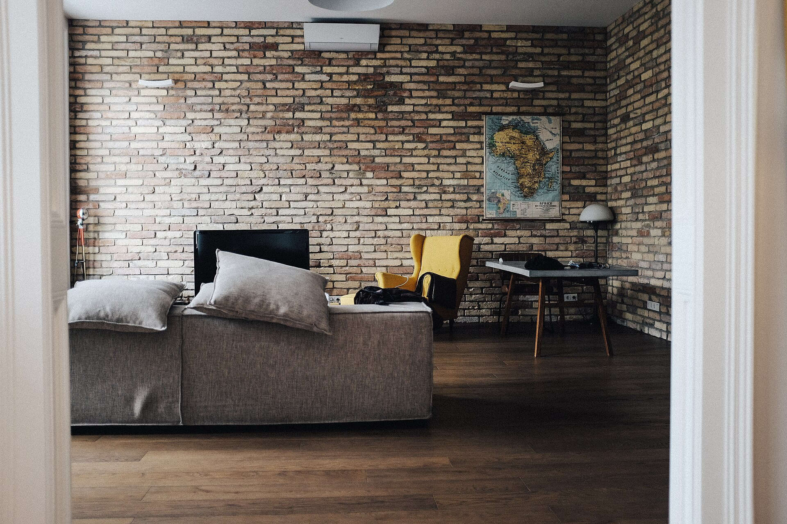
One brick wall — real brick, brick slips, or a good brick-effect wallpaper where the rules allow — gives a small living room instant character, so the rest of the room can stay simple. The rough texture makes plain furniture look better and gives artwork and mirrors something interesting to sit against. Keep the other walls pale so the brick stays a feature, not a takeover.
21. Hang One Large Print Above the Sofa
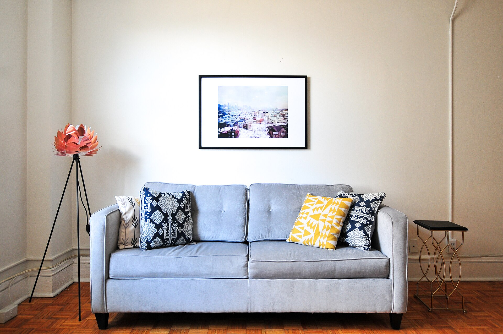
One large print above the sofa looks calmer and more confident than a scatter of small frames, and it is far easier to hang straight. Choose a frame roughly two-thirds the width of the sofa, and hang it so the bottom edge sits about a hand’s width above the sofa back. In a small room, this single focal point does the decorating work of a whole wall.
22. Hang a Round Mirror Above a Slim Console
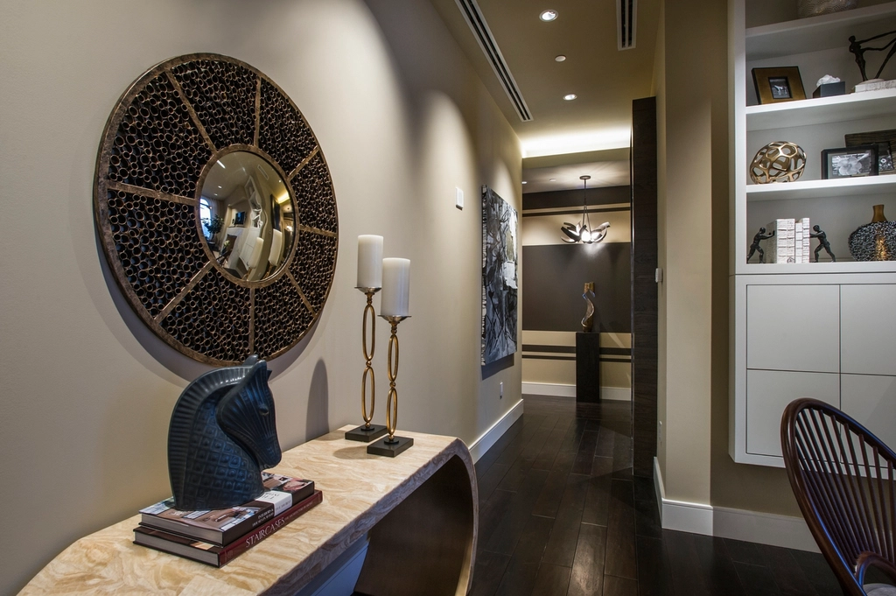
A big round mirror above a slim console is a classic small-space pairing: the mirror bounces daylight around and softens all the straight lines in the room, while the narrow console gives keys, post and a lamp a home without eating floor space. It suits the wall just inside the door, or the short wall at the end of the sofa. Keep the console top nearly clear, so the mirror has something tidy to reflect.
23. Let Bold Curtains Carry the Pattern
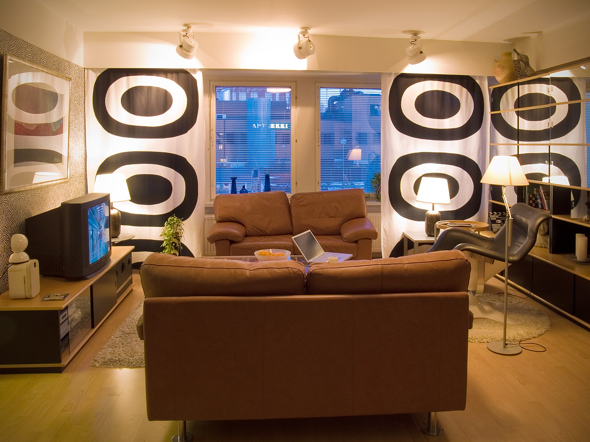
If your walls must stay plain, let the curtains carry the pattern. A bold print on floor-length curtains turns the window wall into the room’s artwork, and everything else — sofa, rug, cushions — can stay quiet and plain. Hang them wide, so the full pattern shows at the sides of the window without blocking the daylight. This is also one of the easiest changes to reverse when you fancy something new.
24. Anchor the Room with a Dark Sofa
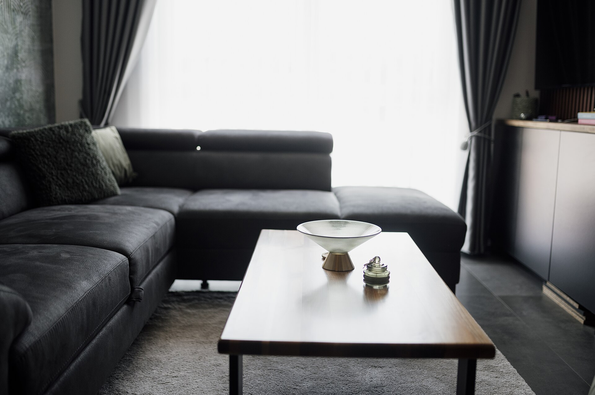
A dark sofa in a light room is not a mistake — it is an anchor. The deep colour grounds the seating area, hides everyday marks better than pale fabric, and makes light cushions and throws stand out. Keep the walls and rug lighter so the contrast feels fresh rather than heavy, and repeat the dark tone in one or two small pieces so the sofa does not sit there alone.
25. Make One Pendant Light the Star
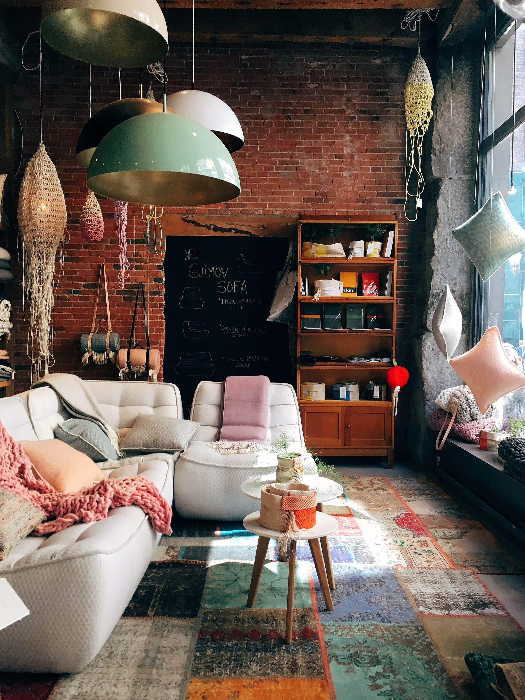
One generous pendant light above the coffee table gives a small living room a centre, the same way a rug centres the floor. It draws the eye upward, which makes the ceiling feel higher, and it can free the side tables from lamps when space is tight. Hang it low enough to feel cosy but high enough that nobody’s view across the room is blocked, and choose a warm bulb.
26. Save the Side Table with a Swing-Arm Wall Lamp
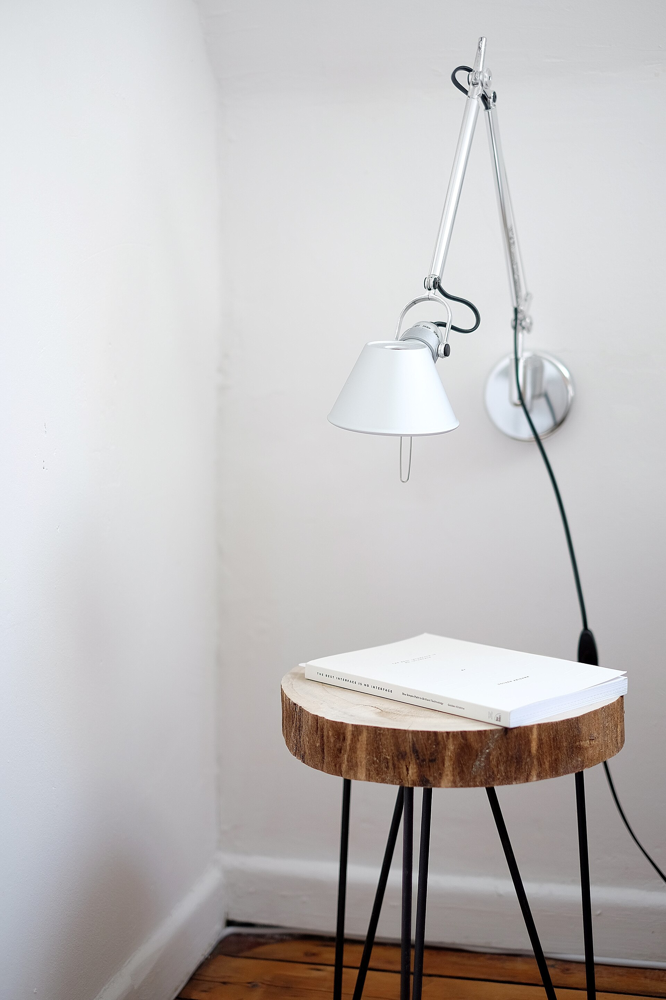
A swing-arm wall lamp gives you reading light exactly where you sit, without using any table or floor space — a real saving in a small room. Fix it beside the sofa or the reading chair at about shoulder height, and swing it away when you do not need it. Renters can look for plug-in versions that hang from a hook and leave barely a mark.
27. Warm a Dark Corner with a Brass Lamp
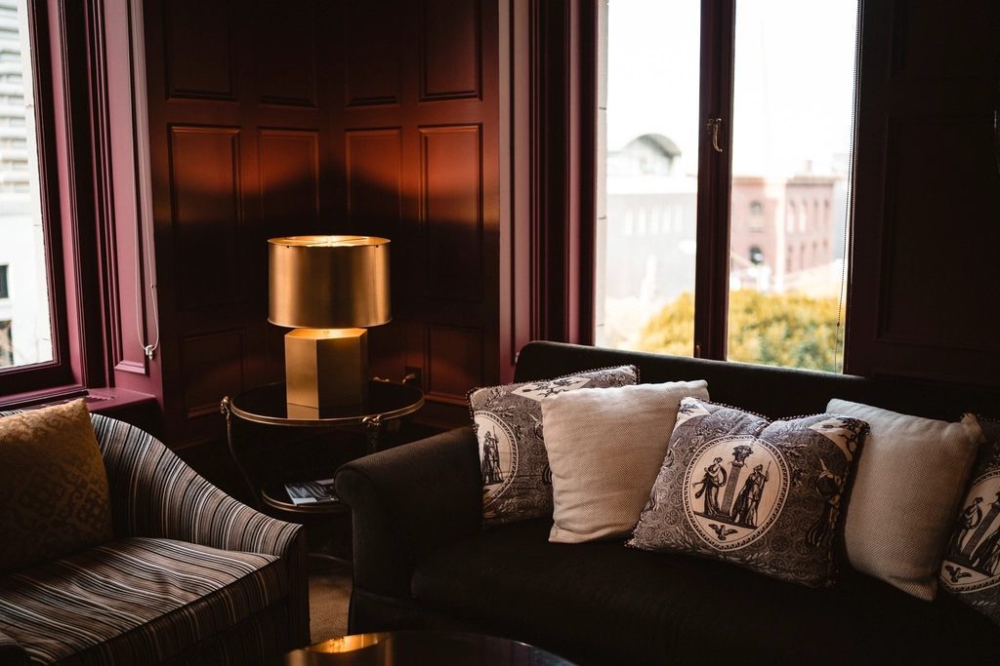
A single metallic lamp — brass, gold or copper-toned — warms up a room of plain, dark or second-hand furniture in seconds. Light glowing on metal feels close to candlelight: soft, warm and a little bit special, even on an ordinary evening. It works best as the only shiny thing in its corner, set among matte fabrics and wood.
28. Fill an Empty Corner with Plants
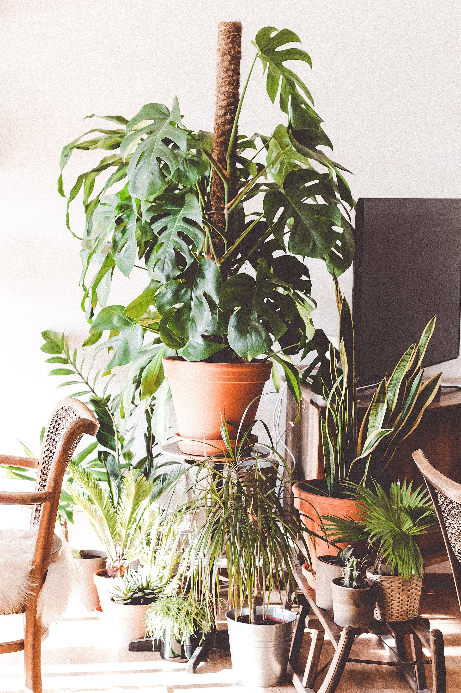
The corner that fits nothing usually fits a plant. A cluster of two or three plants at different heights fills dead space, softens the hardest lines in the room, and makes even a tiny living room feel looked after. Start with forgiving types that tolerate ordinary light, group them on the floor and on a small stand, and keep the pots in one colour family so the corner looks calm rather than jungle-like.
29. Choose Light Wood to Keep It Airy
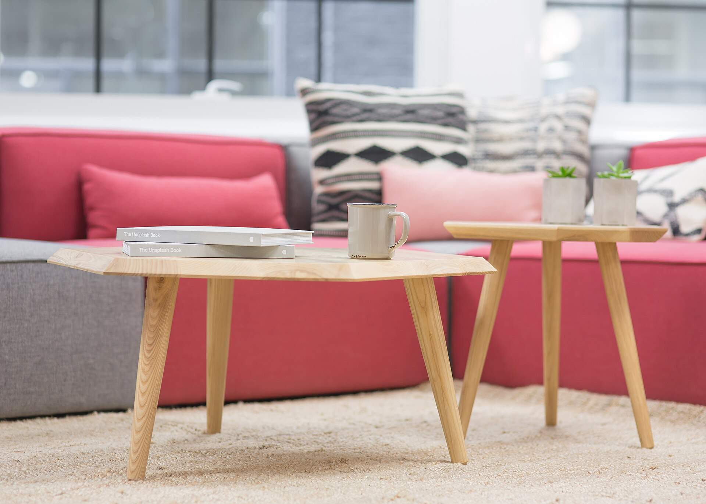
Light-coloured wood furniture — pale oak, ash or simple pine — reflects the room’s brightness instead of absorbing it, so a small living room feels airier. It also mixes happily with white walls, soft colours and natural fabrics, which makes it forgiving for beginners building a room piece by piece. If new furniture is not an option, pale wood picture frames, a tray or a small stool give the same lift.
30. Keep the Palette Light and Bright
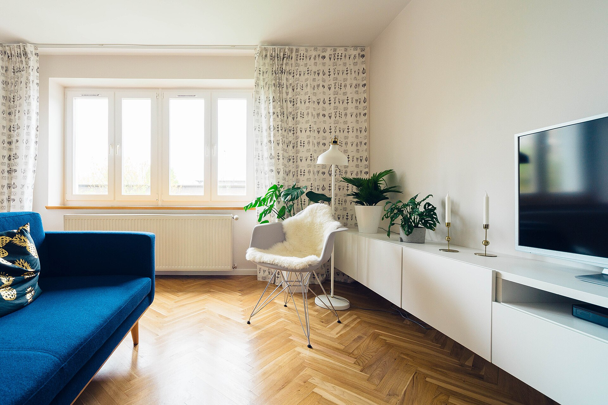
The simplest way to make a small living room feel bigger is to keep most of it light: pale walls, a light rug, light curtains and furniture in whites, creams and soft colours. Light surfaces bounce daylight around, blur the edges of the room, and make the walls feel further away. Add depth with texture — linen, wool, woven baskets — rather than dark colour, and save stronger colours for cushions you can swap in minutes.
31. Layer Cushions in Different Textures
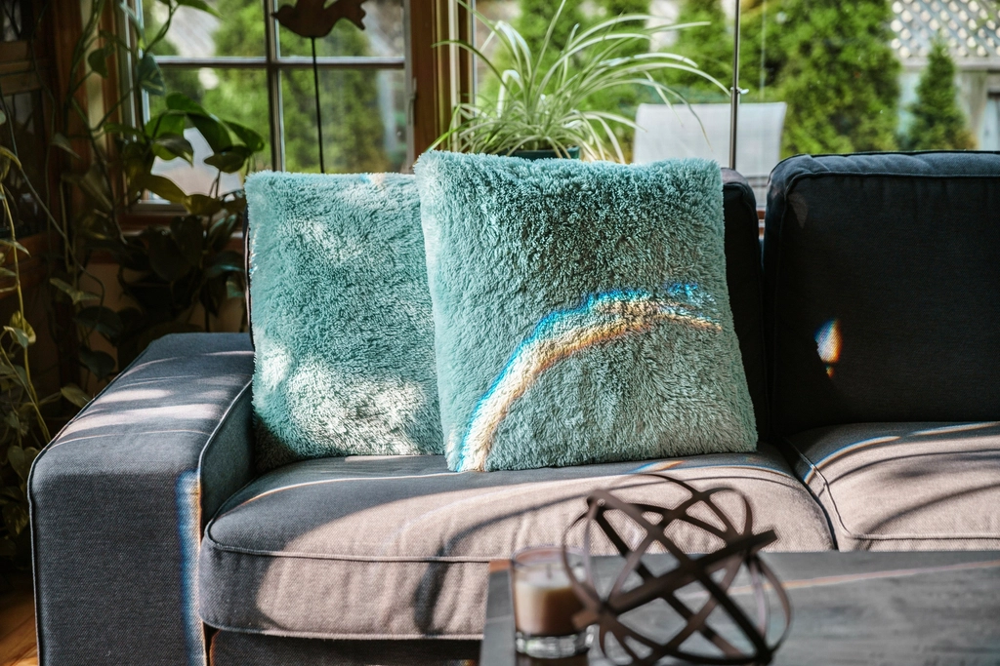
Cushions are the cheapest refresh in the room, and in a small space texture matters more than pattern. Mix a fluffy or knitted cushion with a smooth linen or velvet one in the same colour family, and the sofa looks layered and inviting without getting busy. Two or three cushions per seat is plenty — more than that, and you spend your life moving them before you can sit down.
32. Drape a Throw Over the Sofa Arm
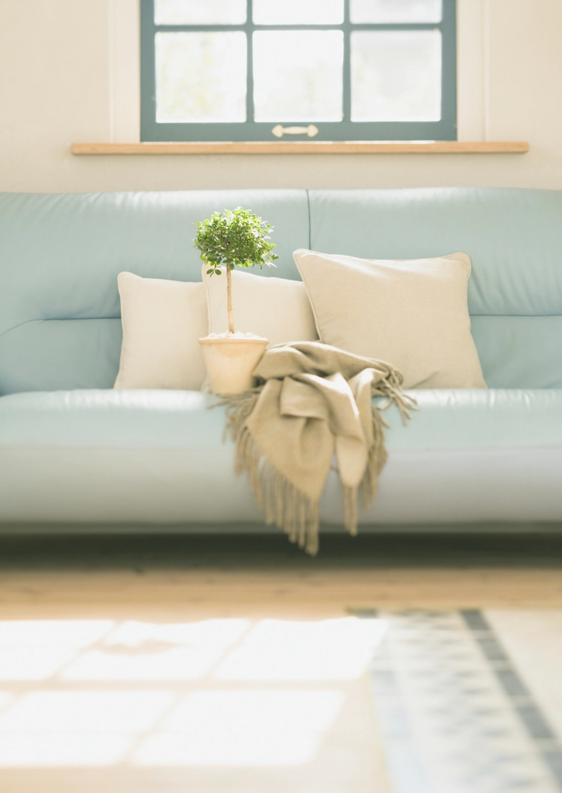
A throw draped over the arm or the back of the sofa adds colour, pattern and warmth in one move, and it is always within reach on a cold evening. Fold it lengthways for a neat, hotel-style stripe, or let it fall loosely for a softer look. Choose one that picks up a colour already in the room — from the rug, the curtains or a print — so it ties the whole seating area together.
33. Turn a Deep Windowsill into a Window Seat
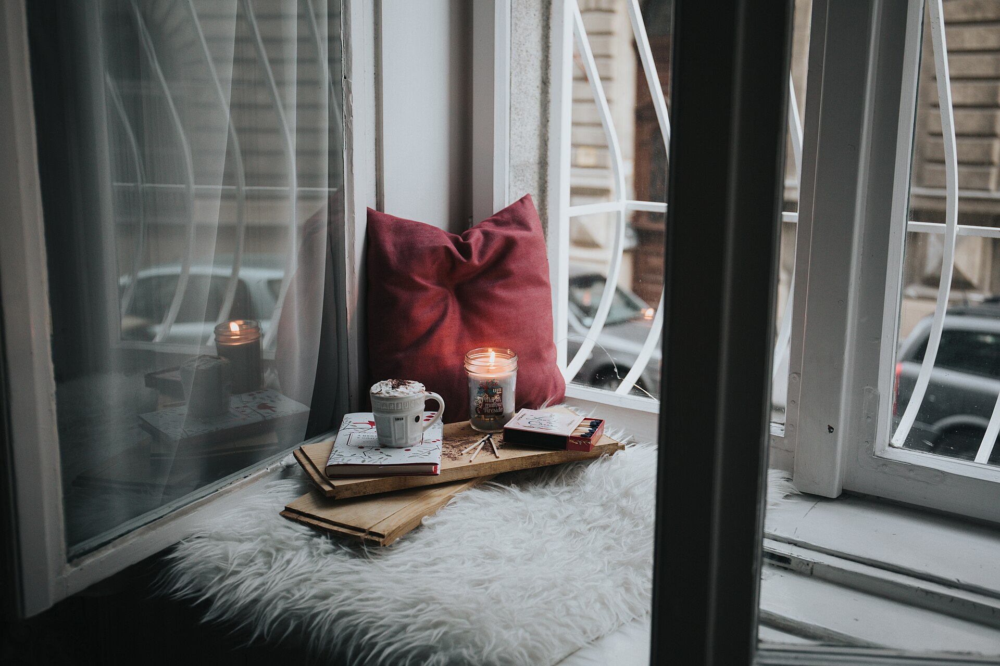
A deep windowsill is a seat waiting to happen. Add a cushion or a folded blanket, a small pile of books and a candle or a mug, and the brightest spot in the room becomes the seat everyone wants. It costs no floor space at all, which makes it perfect for small apartments. Just keep the other end of the sill clear, so the window still opens easily.
34. Fit a Tiny Work Corner by the Window
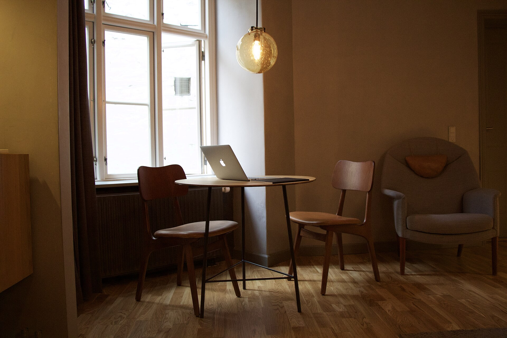
A small round table and two chairs by the window make a work corner that does not shout ‘office’. A round table has no sharp corners to squeeze past, seats two for coffee or a board game, and doubles as a dining spot in a studio flat. When work is done, close the laptop and put it in a basket or a drawer, and the living room is a living room again.
35. Style the Coffee Table with Books and a Plant
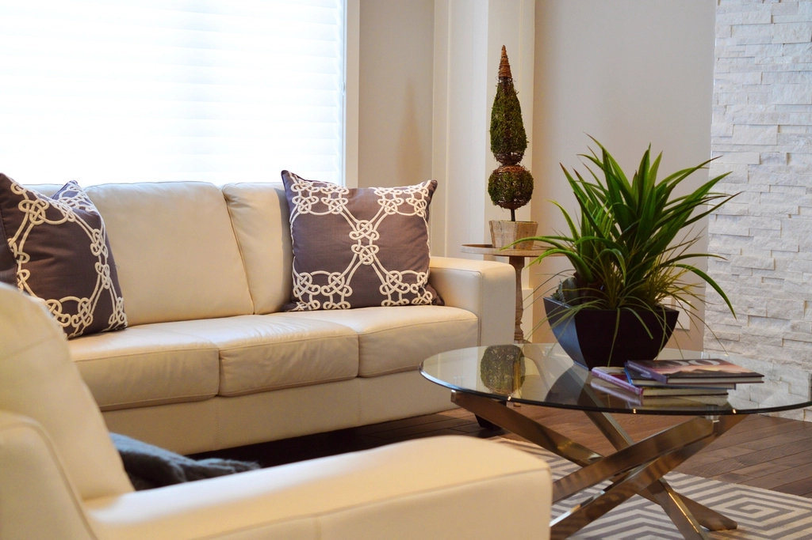
A coffee table looks finished with just three things: a small stack of books, one plant or vase, and some space left empty. The stack gives height, the plant gives life, and the empty space is what makes it look styled rather than cluttered. Keep it honest, too — if remotes and mugs live on the table, give them a small tray so the tidy look survives real life.
Final Thoughts
Thirty-five ideas is a menu, not a homework list. Start with the one that fixes your biggest frustration — seating, storage, light or bare walls — live with it for a week, and only then choose the next. Small living rooms reward patience: two or three well-chosen changes will beat a weekend of buying things you then have to find room to store.
For more affordable refreshes, layout help and furniture makeovers, explore the full Budget Living Room Makeover category. And if you rent your home, pair these ideas with our Renter-Friendly Decor guides, so every change you make can come down cleanly when you move.